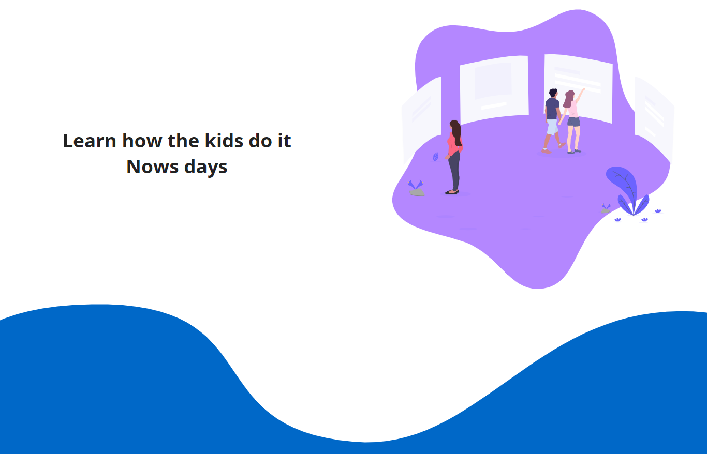
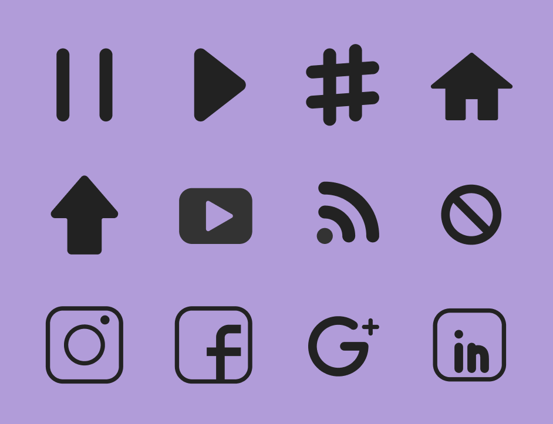
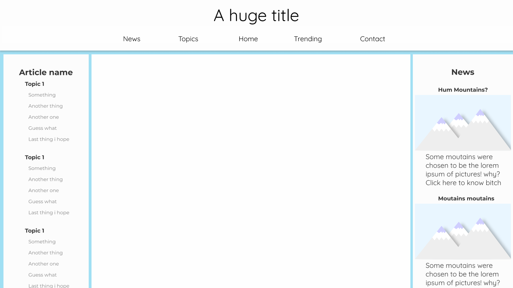
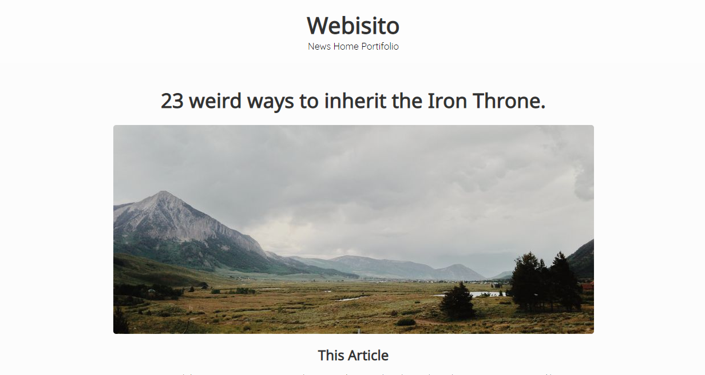
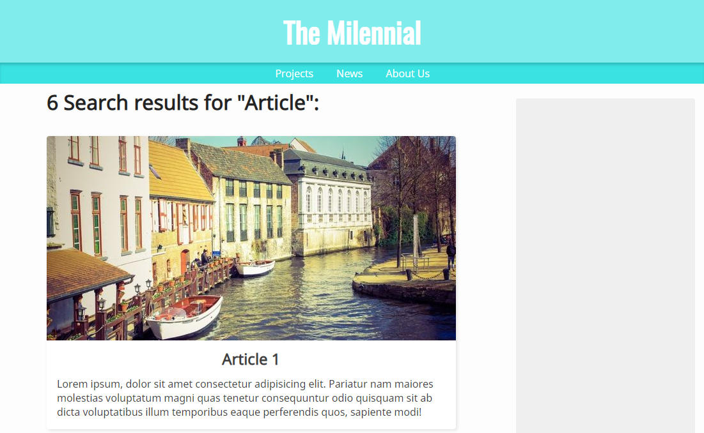
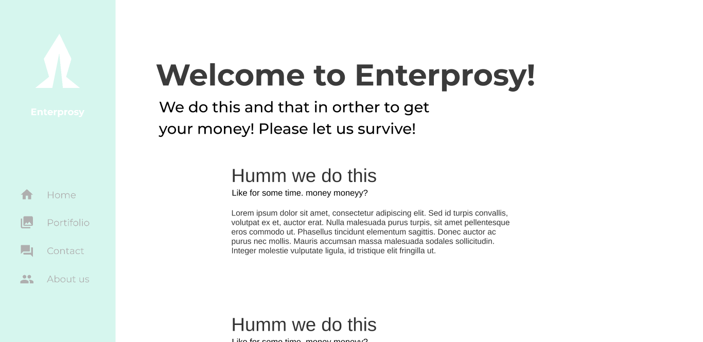
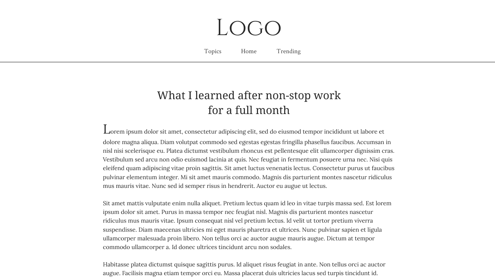
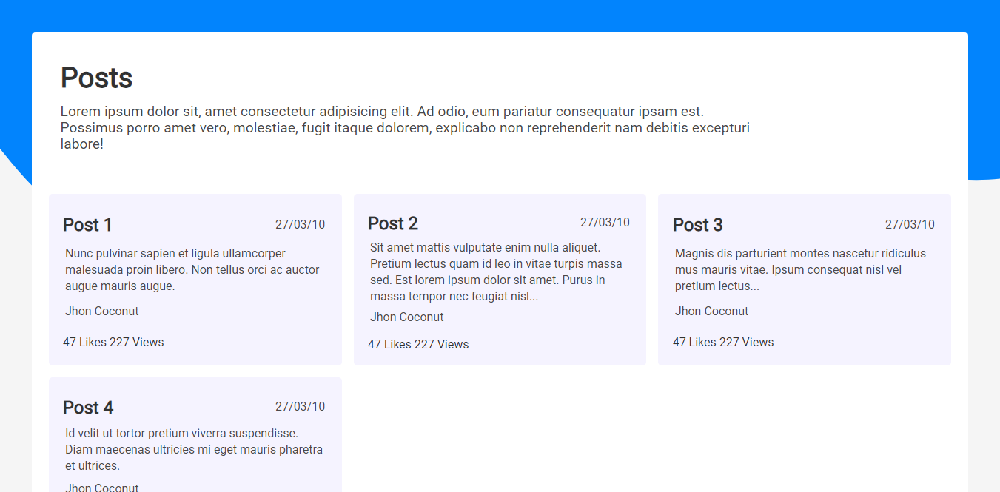
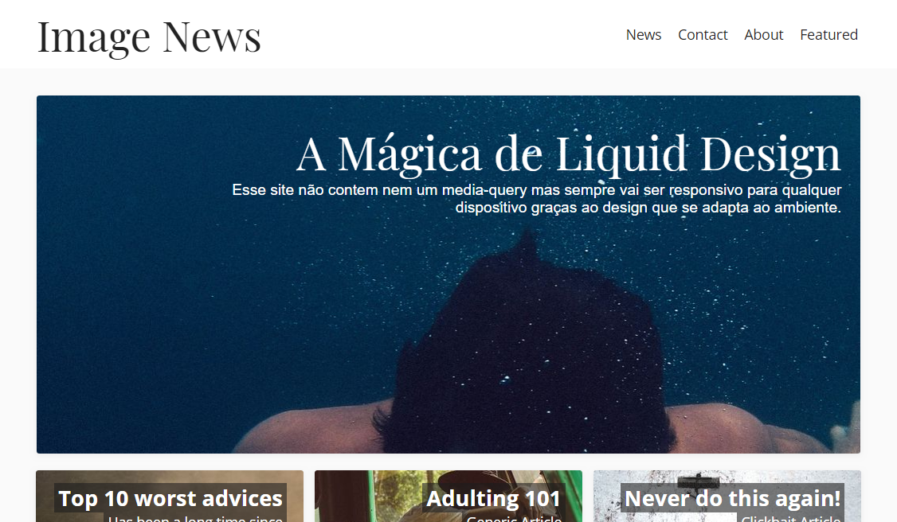

SVG Site

Nesse site eu estava experimentando novas técnicas em CSS e a utilização de desenhos e backgrounds com linhas com movimento. Resultando num design simples mas interessante.
Round Icons

Ícones redondos que podem ser utilizados em qualquer tipo de projeto desenhados em vector graphics que facilmente podem ser exportados como SVG e PNG.
Blog em Material Design

Utilizando material design eu tentei recriar um blog com estilo clássico com uma forma mais moderna e agradável. Com a habilidade de reter tanto users mais novos como os mais antigos.
Blog post

Eu criei essa página com a meta de criar um site estilo blog minimalista e fácil de ler.
Ela também inclui cartões que se adaptam com um novo design ao tamanho da tela e sem nem um @mediaquery.
Search Page

Pagina de pesquisa de um blog com estilo leve e agradável.
Site funcinal

Um prototype pra experimentar uma navbar fixa na esquerda com cores pasteis.
Front-Page Moderna

Uma front-page com design que facilmente se comunica com o usuário de forma moderna e interessante.
Artigo Sério

Uma página de blog com design sério mas user-friendly.
Light Data Website

Data-driven design (design voltado á informação) onde eu criei um site com design leve onde o usuário pode observar uma página cheia de informação mas sem se sentir desconfortável.
Site de Noticias

Site de noticias cheio de imagens, com conteudo realçado para os usuários em qualquer tipo de plataforma somente com um @media querie.